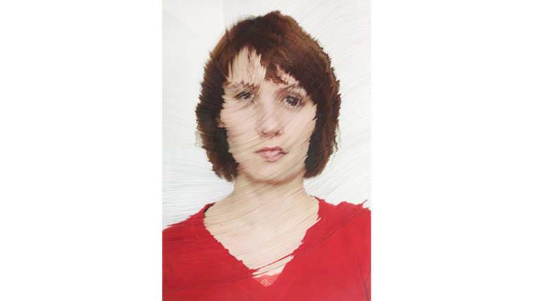

idea

Nerhol
http://www.cbc-net.com/event/2012/03/nerhol/-どんな人
現代美術を基軸に活動してきた飯田竜太とクリエイティブデザインを基軸に活動していた田中義久によって結成されたユニット。デザインを現代美術の融合を目的とした表現活動を行っています。
-解説
部分的に湾曲した肖像画です。よく見ると、写真が積層してなおかつ彫られています。3分間シャッターを切り続け、その写真を定着し作っているそうです。
-好きなところ
写真を積み重ねて彫るという発想が好きです。レイヤーを平面としてではなく、三次元の塊として捉えていて、面白いアイデアだなと思いました。デジタル上で再現するなら、高低差の範囲がマウスの挙動で変わったりするとか面白い表現になるんじゃないかなと思いました。